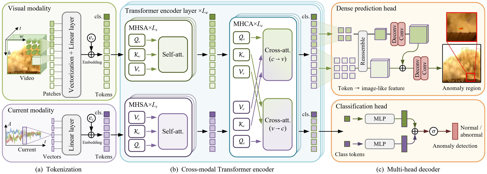

1. Northeastern University, 2. Swinburne University of Technology
Anomaly detection in complex industrial processes plays a pivotal role in ensuring efficient, stable, and secure operation. Existing anomaly detection methods primarily focus on analyzing dominant anomalies using the process variables (such as arc current) or constructing neural networks based on abnormal visual features, while overlooking the intrinsic correlation of cross-modal information. This paper proposes a cross-modal Transformer (dubbed FmFormer), designed to facilitate anomaly detection by exploring the correlation between visual features (video) and process variables (current) in the context of the fused magnesium smelting process. Our approach introduces a novel tokenization paradigm to effectively bridge the substantial dimensionality gap between the 3D video modality and the 1D current modality in a multiscale manner, enabling a hierarchical reconstruction of pixel-level anomaly detection. Subsequently, the FmFormer leverages self-attention to learn internal features within each modality and bidirectional cross-attention to capture correlations across modalities. By decoding the bidirectional correlation features, we obtain the final detection result and even locate the specific anomaly region. To validate the effectiveness of the proposed method, we also present a pioneering cross-modal benchmark of the fused magnesium smelting process, featuring synchronously acquired video and current data for over 2.2 million samples. Leveraging cross-modal learning, the proposed FmFormer achieves state-of-the-art performance in detecting anomalies, particularly under extreme interferences such as current fluctuations and visual occlusion caused by heavy water mist. The presented methodology and benchmark may be applicable to other industrial applications with some amendments.
Fig 1. Cross-modal information is exploited to \revise{perform anomaly detection in the context of a typical industrial process}, fused magnesium smelting, as illustrated in (a). The picture at the bottom left shows an anomaly region on the furnace shell, whose visual feature is difficult to detect due to interference from heavy water mist. A novel FMF Transformer (FmFormer) is proposed using synchronous acquired video and current data, to explore the internal features of each modality by self-attention and the correlation feature across modalities by cross-attention, as shown in (b).

Fig 2. An overview of the proposed FmFormer for anomaly detection in fused magnesium smelting processes.
Fig 3. Visual comparison of the proposed FmFormer-B (cross-modality) with three state-of-the-art Transformer-based methods for pixel-level anomaly detection on three challenging cases.
Gaochang Wu, Yapeng Zhang, Lan Deng, Jingxin Zhang, Tianyou Chai. "Cross-Modal Learning for Anomaly Detection in Complex Industrial Process: Methodology and Benchmark". IEEE Transactions on Circuits and Systems for Video Technology, 2024, 1-1
@article{wu2024crossmodal,
title={Cross-Modal Learning for Anomaly Detection in Complex Industrial Process: Methodology and Benchmark},
author={Gaochang Wu and Yapeng Zhang and Lan Deng and Jingxin Zhang and Tianyou Chai},
year={2024},
journal={IEEE Transactions on Circuits and Systems for Video Technology},
DOI={10.1109/TCSVT.2024.3491865},
pages={1-1},
}